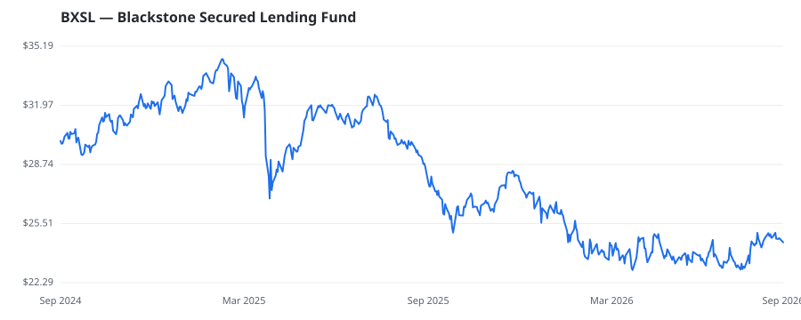

bullish · bearish · n/a — dots: price>SMA10 · SMA10>SMA50 · SMA50>SMA200 · up>down volume (20d)
Other · mid cap

Blackstone Secured Lending Fund is a non-diversified, closed-end management investment company. The investment objectives of the company are to generate current income and, to a lesser extent, long-term capital appreciation. The company seeks to achieve its investment objectives by investing in originated loans and other securities, including syndicated loans of private U.S. companies, typically in the form of first lien senior secured and unitranche loans, unsecured and subordinated loans, and other securities. The company operates as a single reportable segment and derives revenues from inve · website
| Revenue | $756.0M | Net income | $563.5M |
|---|---|---|---|
| Operating income | — | Diluted EPS | $2.46 |
| Assets | $14.7B | Equity | $6.2B |
🛒 Newly buying: Lunate Capital Ltd (+99%, 12.1% of book)
| Fund | Fund alpha vs SPY | Position | % of book |
|---|---|---|---|
| Lunate Capital Ltd | +99% | $24M | 12.1% |
| Hedeker Wealth, LLC | +10% | $1M | 0.3% |
| Adams Asset Advisors, LLC | +10% | $1M | 0.1% |
Hedge data: SEC EDGAR 13F · ranked funds beat SPY in >50% of their quarters · fund alpha = mirror-portfolio return minus SPY.